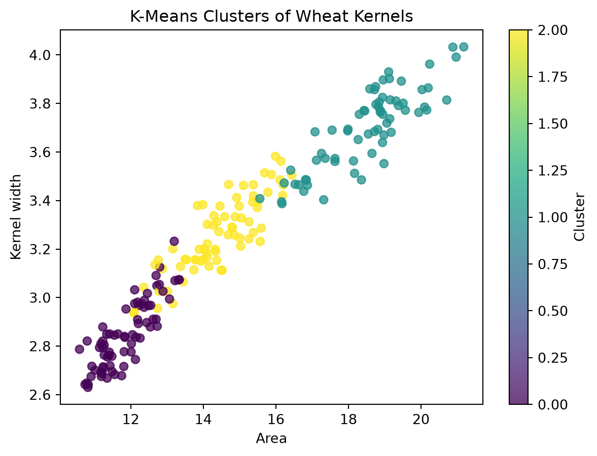
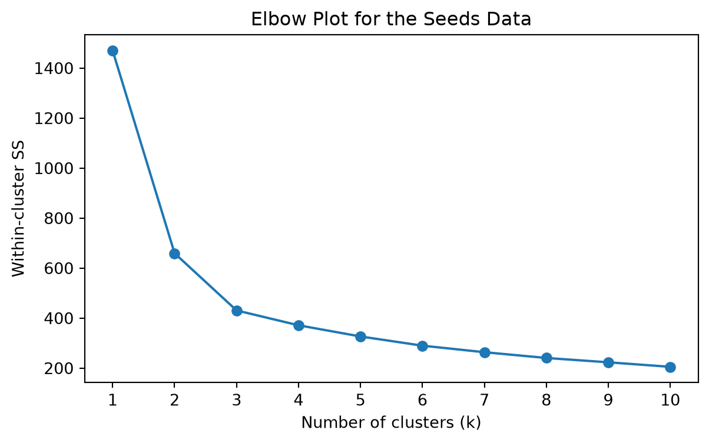
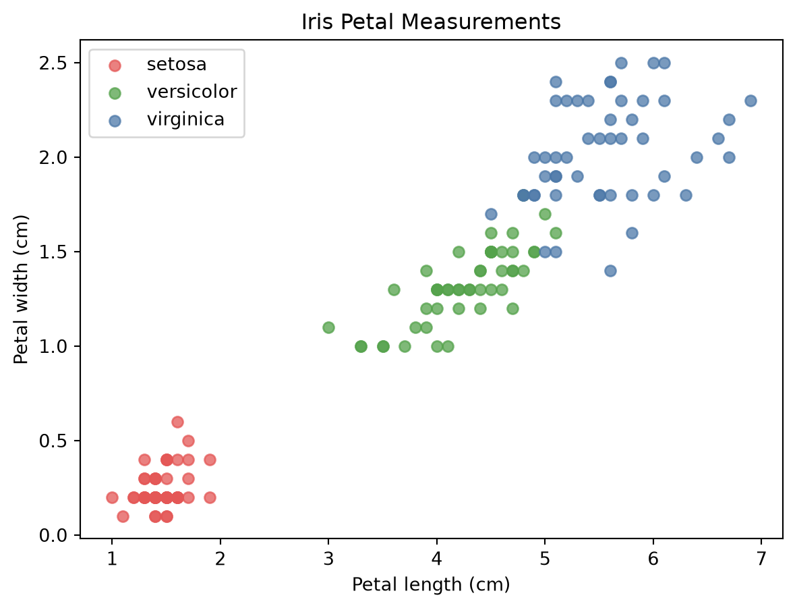
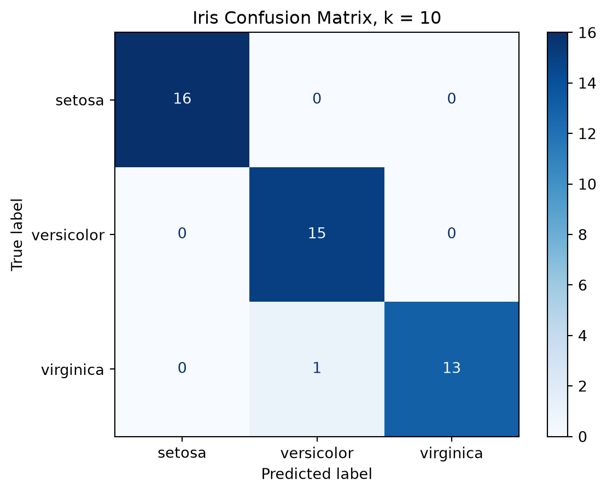
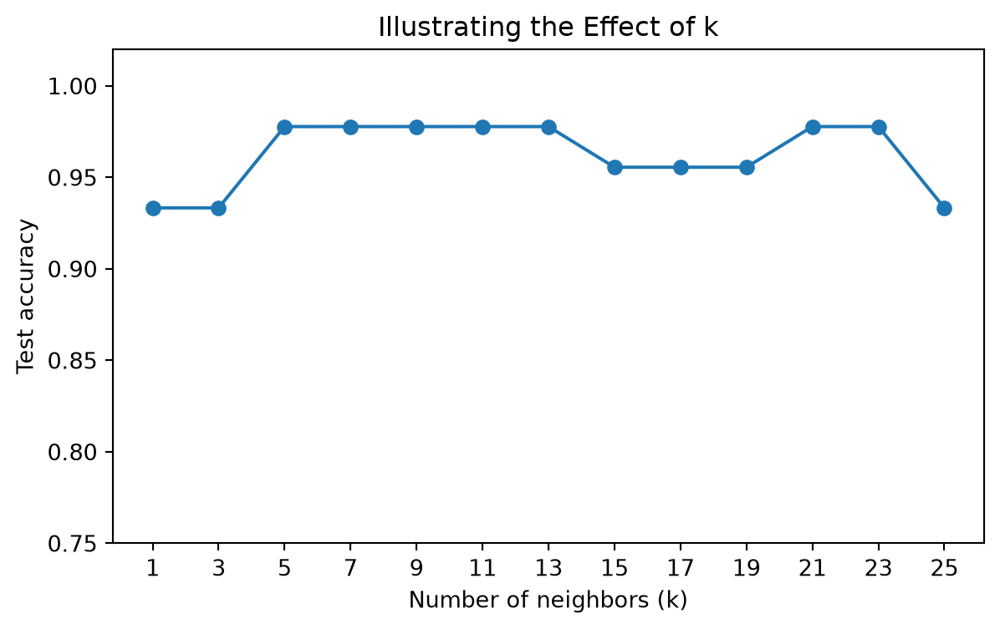

This lab moves from Python basics to a complete introductory machine-learning workflow. We will use k-means to discover groups without a target and k-nearest neighbors (KNN) to predict a known target. Both methods depend on distance, so scaling is central to the workflow.
Learning objectives
By the end of this lab, you should be able to:
Explain why distance-based methods require attention to variable scales.
Standardize a set of predictors.
Fit and interpret a k-means model.
Use within-cluster sum of squares and an elbow plot to compare values of k.
Prepare training and testing samples for KNN.
Fit a KNN classifier and evaluate it with accuracy and a confusion matrix.
Explain how the meaning of k differs between k-means and KNN.
How this notebook works
RUN: Execute the cell without changing it.
MODIFY: Change one item, rerun the cell, and compare the result.
PRACTICE: Complete a short task using the preceding example.
You do not need to memorize every command. Focus on the workflow, the role of each object, and what the output means.
# RUN: Import the packages used in this lab.import numpy as npimport pandas as pdimport matplotlib.pyplot as pltfrom sklearn.cluster import KMeansfrom sklearn.datasets import load_irisfrom sklearn.metrics import accuracy_score, confusion_matrix, ConfusionMatrixDisplayfrom sklearn.model_selection import train_test_splitfrom sklearn.neighbors import KNeighborsClassifierfrom sklearn.preprocessing import StandardScalerprint("Setup complete.")
Setup complete.
Part 1: K-means clustering with wheat seeds
K-means is an unsupervised learning method: it forms groups using the predictor measurements without using a target label. The Seeds dataset contains seven measurements for 210 wheat kernels. Our goal is to discover groups of similar kernels.
1.1 Upload, load, and inspect the data
Run the next cell in Colab and select seeds_cluster.csv. If you are using Positron or another local notebook editor, place the CSV file in the same folder as this notebook.
# RUN: Upload seeds_cluster.csv when working in Colab.try:from google.colab import files uploaded = files.upload()exceptImportError:print("Local notebook detected. Put seeds_cluster.csv in the notebook folder.")
Local notebook detected. Put seeds_cluster.csv in the notebook folder.
# RUN: Load and inspect the Seeds data.seeds = pd.read_csv("seeds_cluster.csv")print("Shape:", seeds.shape)print("Missing values:", seeds.isna().sum().sum())print("Variables:", seeds.columns.tolist())display(seeds.head())display(seeds.describe().round(2))
Use the preceding output to answer these questions:
How many observations and variables are in the dataset?
Are any values missing?
Which variable has the largest mean?
Which variable appears to have the largest numerical scale?
# PRACTICE 1: Display the mean of each variable, sorted from largest to smallest.# Hint: seeds.mean().sort_values(...)# YOUR CODE HERE
1.2 Distance and standardization
K-means assigns observations to nearby centers using distance. For two vectors \(x\) and \(y\), Euclidean distance is
\[d(x,y)=\sqrt{\sum_j (x_j-y_j)^2}. \]
A variable with a large numerical scale can dominate this calculation. Standardization transforms each variable to approximately mean 0 and standard deviation 1, allowing the variables to contribute on comparable scales.
# RUN: Compare two observations before and after scaling.seed_scaler = StandardScaler()seed_scaled = pd.DataFrame( seed_scaler.fit_transform(seeds), columns=seeds.columns)distance_before = np.sqrt(np.sum((seeds.iloc[0] - seeds.iloc[1]) **2))distance_after = np.sqrt(np.sum((seed_scaled.iloc[0] - seed_scaled.iloc[1]) **2))print("Distance before scaling:", round(distance_before, 3))print("Distance after scaling:", round(distance_after, 3))
Distance before scaling: 1.334
Distance after scaling: 1.185
Your turn
Calculate the Euclidean distance between the first and third standardized observations. Then verify your result with np.linalg.norm(...).
# PRACTICE 2: Calculate the distance in two ways.# distance_manual = ...# distance_check = np.linalg.norm(...)# print(...)
1.3 Fit and inspect a three-cluster model
The scikit-learn workflow has two main steps here:
Define a KMeans model and choose the number of clusters.
Fit the model and save the cluster assigned to each observation.
random_state=750 and n_init=10 make the result reproducible. Cluster numbers are arbitrary labels: cluster 0 is not inherently better or earlier than cluster 1.
# RUN: Define and fit a three-cluster k-means model.seed_model = KMeans(n_clusters=3, n_init=10, random_state=750)seed_cluster = seed_model.fit_predict(seed_scaled)print("First 10 cluster labels:", seed_cluster[:10])print("Cluster sizes:")print(pd.Series(seed_cluster).value_counts().sort_index())print("Within-cluster SS:", round(seed_model.inertia_, 2))print("Custer centers are:")print(seed_model.cluster_centers_)
The model centers are currently expressed in standardized units. inverse_transform() converts them back to the original measurement units, making the groups easier to interpret.
# RUN: Display cluster centers in the original units.seed_centers = pd.DataFrame( seed_scaler.inverse_transform(seed_model.cluster_centers_), columns=seeds.columns)seed_centers.index.name ="cluster"display(seed_centers.round(2))
area
perimeter
compactness
kernel_length
kernel_width
asymmetry
groove_length
cluster
0
11.86
13.25
0.85
5.23
2.85
4.74
5.10
1
18.50
16.20
0.88
6.18
3.70
3.63
6.04
2
14.44
14.34
0.88
5.51
3.26
2.71
5.12
# RUN: Visualize two original measurements and color by learned cluster.plt.figure(figsize=(7, 5))plt.scatter( seeds["area"], seeds["kernel_width"], c=seed_cluster, cmap="viridis", alpha=0.75)plt.title("K-Means Clusters of Wheat Kernels")plt.xlabel("Area")plt.ylabel("Kernel width")plt.colorbar(label="Cluster")plt.show()

Your turn
Using seed_centers:
Identify the cluster with the largest average area.
Identify the cluster with the greatest average asymmetry.
Give each cluster a short descriptive label based on multiple variables.
Then modify the visualization to plot kernel_length against groove_length.
# PRACTICE 3: Create the modified cluster plot.# YOUR CODE HERE
1.4 Sum of squares and the elbow method
K-means tries to make observations within each cluster close to their center. We use three related quantities:
Total SS: total variation around the overall center;
Within-cluster SS: variation around the cluster centers;
Between-cluster SS: variation explained by separating observations into clusters.
They satisfy total_SS = within_SS + between_SS. Scikit-learn stores within-cluster SS as inertia_.
# RUN: Calculate the three sums of squares for the fitted model.overall_center = seed_scaled.mean(axis=0)total_SS = ((seed_scaled - overall_center) **2).to_numpy().sum()within_SS = seed_model.inertia_between_SS = total_SS - within_SSprint("Total SS:", round(total_SS, 2))print("Within-cluster SS:", round(within_SS, 2))print("Between-cluster SS:", round(between_SS, 2))print("Check total:", round(within_SS + between_SS, 2))
# RUN: Compare k = 1 through 10.k_values =range(1, 11)within_SS_values = []for k in k_values: model = KMeans(n_clusters=k, n_init=10, random_state=750) model.fit(seed_scaled) within_SS_values.append(model.inertia_)seed_results = pd.DataFrame({"k": list(k_values),"within_SS": within_SS_values})display(seed_results.round(2))
k
within_SS
0
1
1470.00
1
2
659.17
2
3
430.66
3
4
371.28
4
5
326.55
5
6
289.74
6
7
263.56
7
8
240.54
8
9
223.17
9
10
205.13
# RUN: Plot the elbow curve.plt.figure(figsize=(7, 4))plt.plot(seed_results["k"], seed_results["within_SS"], marker="o")plt.xticks(seed_results["k"])plt.title("Elbow Plot for the Seeds Data")plt.xlabel("Number of clusters (k)")plt.ylabel("Within-cluster SS")plt.show()

Your turn
Where does the elbow appear?
Why does within-cluster SS always decrease as k increases?
Why should we not automatically choose the largest possible k?
Fit a four-cluster model below and compare its within-cluster SS with the three-cluster model.
# PRACTICE 4: Fit a four-cluster model and print its within-cluster SS.# seed_model_4 = ...# seed_model_4.fit(...)# print(...)
Part 2: K-nearest neighbors with Iris
KNN is a supervised learning method: it uses observations with known targets to predict the target of a new observation. For each new case, KNN finds the closest training observations and lets their labels vote.
2.1 Load and visualize the labeled data
The Iris dataset has four flower measurements and a species target. Unlike k-means, KNN will use the species labels when fitting the model.
# RUN: Load Iris as a pandas DataFrame.iris = load_iris(as_frame=True)iris_df = iris.frame.copy()iris_df["species"] = iris_df["target"].map(dict(enumerate(iris.target_names)))print("Shape:", iris_df.shape)display(iris_df.head())display(iris_df["species"].value_counts())
# RUN: Plot two measurements and color points by known species.species_colors = ["#E45756", "#54A24B", "#4C78A8"]plt.figure(figsize=(7, 5))for species_id, species_name inenumerate(iris.target_names): rows = iris_df["target"] == species_id plt.scatter( iris_df.loc[rows, "petal length (cm)"], iris_df.loc[rows, "petal width (cm)"], label=species_name, color=species_colors[species_id], alpha=0.75 )plt.title("Iris Petal Measurements")plt.xlabel("Petal length (cm)")plt.ylabel("Petal width (cm)")plt.legend()plt.show()

Your turn
Which species appears easiest to distinguish? Which two overlap most? Support your answer using the plot rather than only the species counts.
2.2 Prepare, standardize, and split the data
We separate the predictor matrix X from the target y, standardize all four predictors, and then create training and testing samples. The training sample is used to fit the model; the testing sample represents unseen observations.
To keep this introductory workflow simple, we standardize the full predictor sample before splitting. Later in the course, we will prevent information leakage by fitting preprocessing steps only on training data, usually inside a pipeline.
# RUN: Standardize the full sample, then create a reproducible train-test split.X = iris.data.to_numpy()y = iris.target.to_numpy()scaler = StandardScaler()X = scaler.fit_transform(X)X_train, X_test, y_train, y_test = train_test_split( X, y, test_size=0.30, random_state=750)print("Training observations:", len(X_train))print("Test observations:", len(X_test))print("Training class counts:", np.bincount(y_train))
Training observations: 105
Test observations: 45
Training class counts: [34 35 36]
Your turn
Use .shape to report the dimensions of all four split objects. Explain why X_train and y_train must have the same number of rows.
# PRACTICE 6: Display the shapes of X_train, X_test, y_train, and y_test.# YOUR CODE HERE
2.3 Define, fit, predict, and evaluate KNN
The supervised-learning workflow has four steps:
Define the model and its settings.
Fit the model using training predictors and targets.
Predict targets for the unseen testing predictors.
Evaluate predictions by comparing them with the known testing targets.
# RUN: Fit and evaluate a KNN classifier.knn_model = KNeighborsClassifier(n_neighbors=10)knn_model.fit(X_train, y_train)test_predictions = knn_model.predict(X_test)print("First scikit-learn prediction:", iris.target_names[test_predictions[0]])print("Test accuracy:", round(accuracy_score(y_test, test_predictions), 3))
First scikit-learn prediction: virginica
Test accuracy: 0.978
Accuracy is the proportion of test observations classified correctly. A confusion matrix gives more detail: rows represent actual classes, columns represent predicted classes, correct predictions appear on the diagonal, and errors appear off the diagonal.
# RUN: Display the confusion matrix as a labeled table.confusion = confusion_matrix(y_test, test_predictions, labels=[0, 1, 2])confusion_table = pd.DataFrame( confusion, index=[f"Actual {name}"for name in iris.target_names], columns=[f"Predicted {name}"for name in iris.target_names])display(confusion_table)
Predicted setosa
Predicted versicolor
Predicted virginica
Actual setosa
16
0
0
Actual versicolor
0
15
0
Actual virginica
0
1
13
# RUN: Visualize the same confusion matrix.ConfusionMatrixDisplay( confusion_matrix=confusion, display_labels=iris.target_names).plot(cmap="Blues")plt.title("Iris Confusion Matrix, k = 10")plt.show()

Your turn
How many test observations were classified correctly?
Which pair of species produced the most confusion?
Change n_neighbors=10 to n_neighbors=3, rerun the model and evaluation cells, and compare the results.
# PRACTICE 7: Fit a three-neighbor model and compare its accuracy.# knn_model_3 = ...# knn_model_3.fit(...)# predictions_3 = ...# print(...)
2.4 Compare several values of k
A small k produces a flexible rule that is sensitive to nearby observations. A larger k produces a smoother decision rule. The following comparison illustrates this tradeoff using the same test split. Later, we will use cross-validation rather than choose k from one test set.
# RUN: Compare several odd values of k on the same test split.candidate_k =list(range(1, 26, 2))test_accuracy = []for k_value in candidate_k: model = KNeighborsClassifier(n_neighbors=k_value) model.fit(X_train, y_train) predictions = model.predict(X_test) test_accuracy.append(accuracy_score(y_test, predictions))knn_results = pd.DataFrame({"k": candidate_k,"test_accuracy": test_accuracy})display(knn_results.round(3))
k
test_accuracy
0
1
0.933
1
3
0.933
2
5
0.978
3
7
0.978
4
9
0.978
5
11
0.978
6
13
0.978
7
15
0.956
8
17
0.956
9
19
0.956
10
21
0.978
11
23
0.978
12
25
0.933
# RUN: Plot test accuracy against k.plt.figure(figsize=(7, 4))plt.plot(candidate_k, test_accuracy, marker="o")plt.xticks(candidate_k)plt.ylim(0.75, 1.02)plt.xlabel("Number of neighbors (k)")plt.ylabel("Test accuracy")plt.title("Illustrating the Effect of k")plt.show()

Your turn
Which values of k achieve the highest accuracy on this split? Why does this result not prove that those values will perform best on all future data?
Lab 2 takeaway
load and inspect data
→ define predictors and, when applicable, the target
→ standardize distance-based predictors
→ define and fit the model
→ examine predictions or clusters
→ evaluate quantitatively
→ interpret in the context of the problem
Complete the larger Wine analysis in BSAN750_HW2_Part2.ipynb as part of Homework 2. Before beginning the homework, restart this Lab 2 notebook and run it from top to bottom to confirm that the complete workflow runs without errors.